Red = T control (0.0) | Yellow = Neutral (0.5) | Green = CT control (1.0) | Click images to zoom
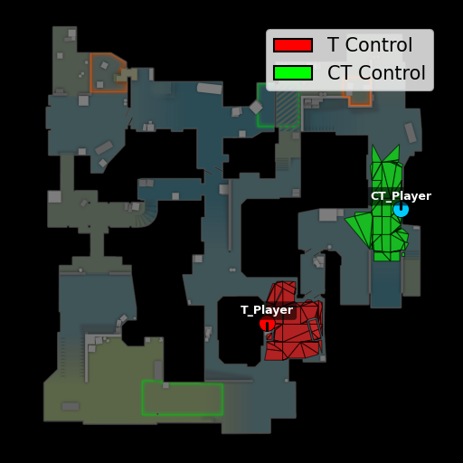
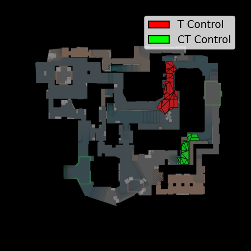
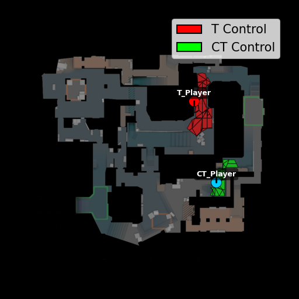
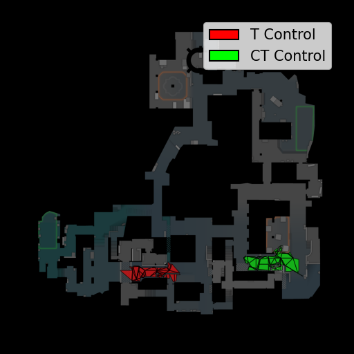
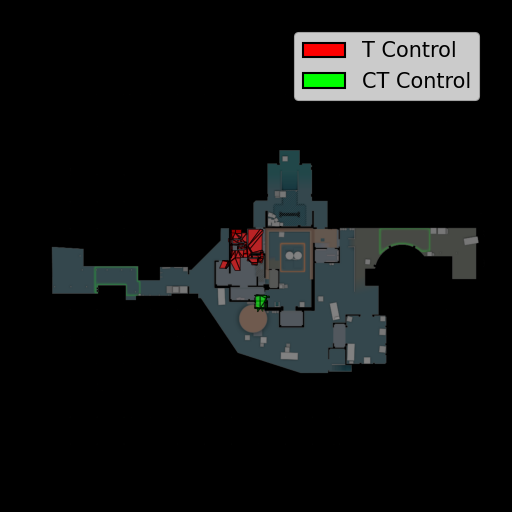
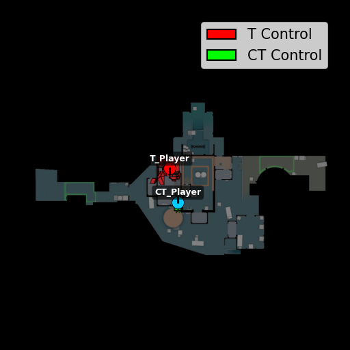
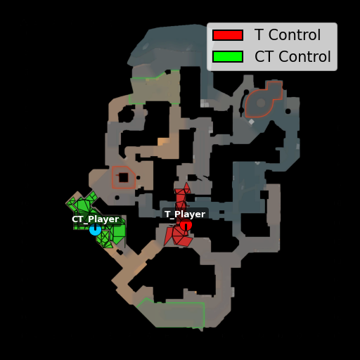
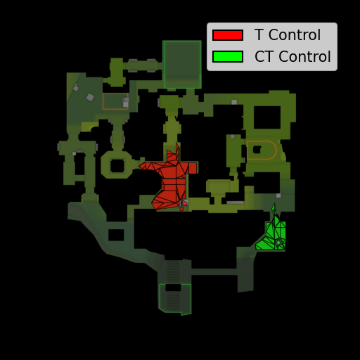
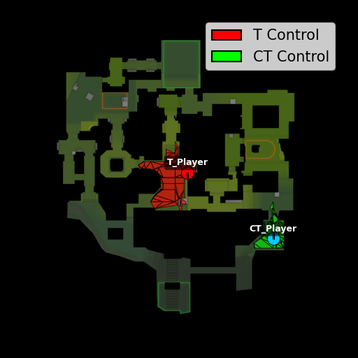
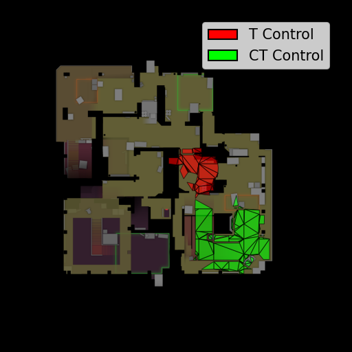
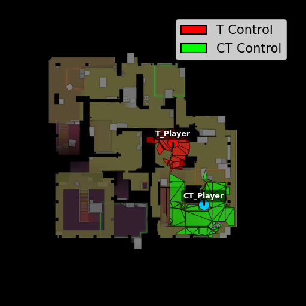
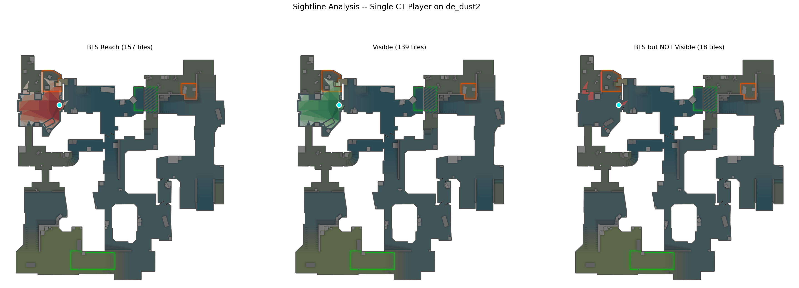
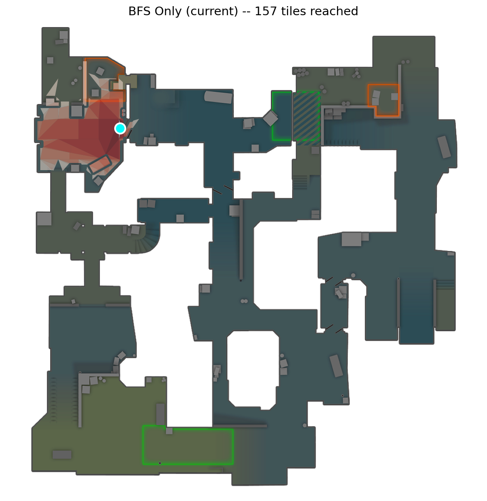
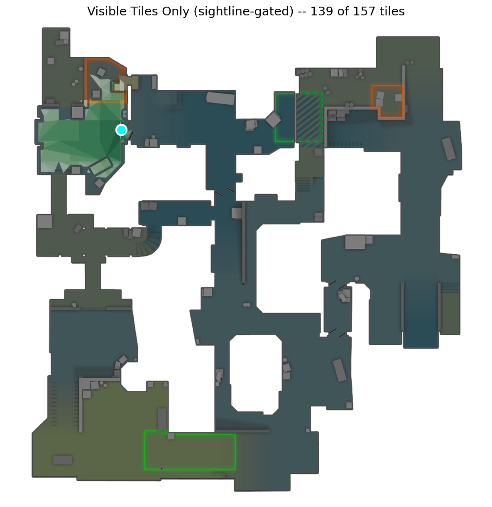
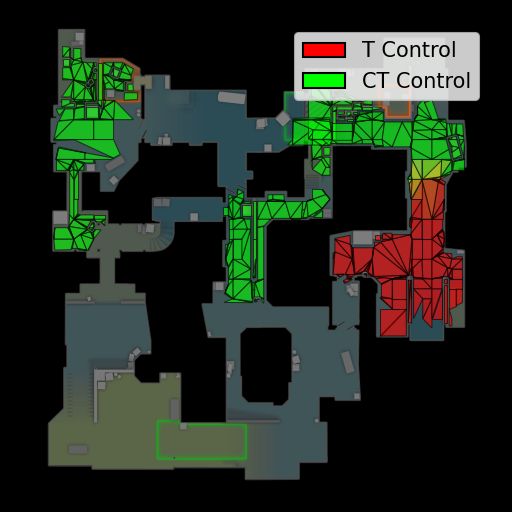
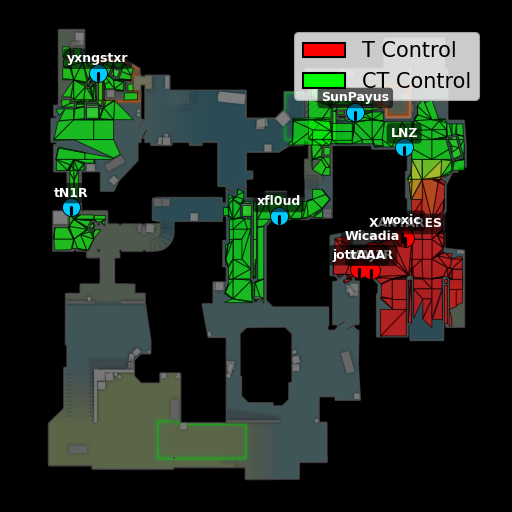
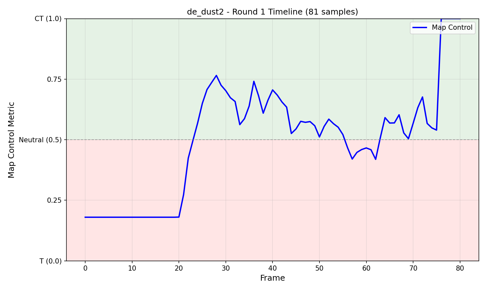
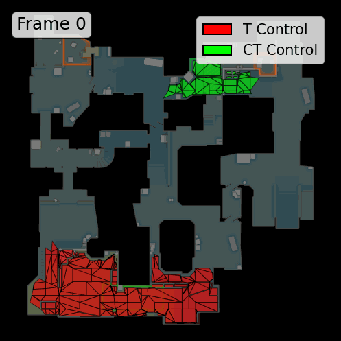
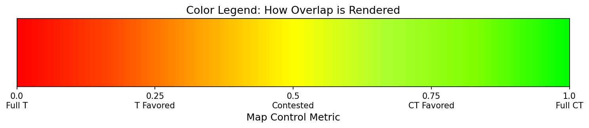
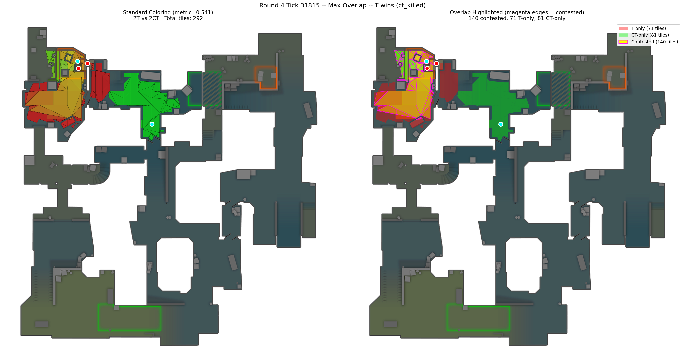
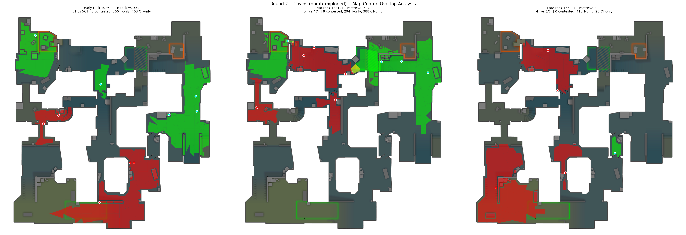
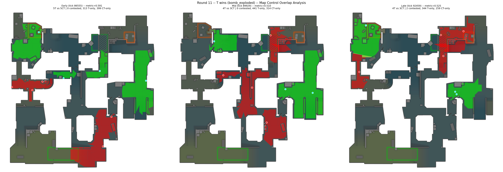
| Map | BO1 Demos | Bar |
|---|---|---|
| de_ancient | 29 | |
| de_inferno | 26 | |
| de_anubis | 24 | |
| de_dust2 | 23 | |
| de_nuke | 22 | |
| de_mirage | 19 | |
| de_vertigo | 11 | |
| de_train | 4 |
Total breakdown: 906 .rar files = 725 BO3 + 21 BO5 + 158 BO1 + 2 unmatched
Recommendation: de_ancient (29) or de_inferno (26) for max BO1 coverage.
de_dust2 has 23 BO1s plus 8 already-parsed demos = best overall if including parsed data.
Location: D:\projects\fps\misc_cs\hltv-scrape\data\
Note: BO3/BO5 archives contain 2-5 demos each (map names inside the .rar), so total available demos across all maps is likely 2000+.
Player yaw (0-360 degrees horizontal look direction) is available per tick. CS2 FOV is ~90 degrees. Currently BFS propagates omnidirectionally — all tiles within depth 10 get equal treatment regardless of where the player is looking.
| Approach | Description | Complexity | Recommendation |
|---|---|---|---|
| C: Zoned Awareness | 3 zones: Focus (0-45deg, 1.0x), Peripheral (45-90deg, 1.0→0.3x), Rear (90+deg, 0.1x). Maps well to CS2 experience. | Low-Med | START HERE — best effort/impact ratio |
| B: Angular Decay | Smooth cosine decay: weight = (1 + cos(angle)) / 2. No sharp boundaries. |
Low | Simpler alternative to C |
| A: Binary FOV Cone | Hard cutoff at 45deg half-angle. Tiles outside FOV = 0 value. | Low | Too harsh — sharp boundary is unrealistic |
| F: Reaction Time Decay | weight = exp(-2 * (angle/720 + 0.25)). Based on human turn speed + reaction time. Flash integration natural. |
Medium | Good 2nd iteration — principled temporal model |
| D: Angular + VisibilityChecker | Combine angular weight with geometric sightline check. Most accurate but ~0.5s/tick. | High | Defer until pre-computed visibility cache exists |
| E: Pitch for multi-level | Add pitch penalty when Z-delta is large (Nuke/Vertigo). Same-floor tiles unaffected. | Medium | Only needed for 2-3 maps |
Multiply angular weights by max(0, 1 - flash_duration/5.0) for blinded players. A flashed player controlling nothing is more realistic. flash_duration is already available in tick data.
Functions to modify: _bfs_helper() accepts player_pos + look_dir, computes angular weight per neighbor. _positions_to_map_control_values() passes orientation. get_tick_map_control_tile_values() reads yaw/pitch columns.
Backward compat: Add use_sightline: bool = False parameter to public functions.
current_equip_value (dollar amount) is available per tick. An AWP ($4750) threatens tiles thousands of units away; a pistol ($200) barely threatens the next room. Currently all players contribute equally.
| Approach | Description | Complexity | Recommendation |
|---|---|---|---|
| E: Equip Value Proxy | Use current_equip_value / 5000 as continuous multiplier on source value + BFS depth. No weapon classification needed. |
Low | START HERE — zero new data dependencies |
| A: Weapon-Class Depth | AWP depth=20, Rifle=12, SMG=8, Pistol=6, Knife=2. Extends range of powerful weapons. | Low | Simple but needs weapon classification |
| B: Source Value Multiplier | AWP=1.5x, Rifle=1.0x, SMG=0.7x, Pistol=0.5x, Knife=0.1x. Same depth, different strength. | Low | Doesn't extend range — misses AWP's key property |
| C: Distance-Based Decay | Replace hop-count BFS with Euclidean distance + weapon-specific exponential decay curves. | Medium | Correct long-term architecture — nav-density independent |
| G: Utility Area Denial | Smokes → set tiles to 0.5 (neutral). Molotovs → set tiles to thrower's team control. Uses grenade events. | Medium | PARALLEL workstream — independent, high tactical value |
| F: Best vs Equipped Weapon | Blend immediate threat (equipped) with potential threat (best in inventory) via switch-time penalty. | Med-High | Needs inventory parsing — defer |
| D: Directional Threat | Combine sightline + weapon range. AWP watching Long = deep narrow cone. SMG in tunnels = wide shallow zone. | High | The dream — combine sightline + weapon work |
| Category | Examples | Equip Value | Suggested Depth | Suggested Mult |
|---|---|---|---|---|
| AWP | awp | $4750 | 20 | 1.4x |
| Sniper | ssg08 | $1700 | 16 | 1.1x |
| Rifle | ak47, m4a4, aug | $1800-3300 | 12 | 1.0x |
| SMG | mac10, mp9, ump | $1050-2350 | 8 | 0.7x |
| Heavy Pistol | deagle | $700 | 8 | 0.7x |
| Pistol | glock, usp | $200-500 | 6 | 0.5x |
| Shotgun | nova, mag7 | $1050-1800 | 5 | 0.6x |
| Knife | knife | $0 | 2 | 0.1x |
| Grenade | smoke, flash, molly | $200-600 | 3 | 0.2x |
| Phase | What | Effort | Impact |
|---|---|---|---|
| 1 | Zoned Awareness sightline | 1-2 days | High |
| 2 | Equipment Value weapon scaling | 0.5-1 day | Medium |
| 3 | Flash duration integration | 0.5 day | Medium |
| 4 | Utility area denial (smoke/molotov) | 1-2 days | High |
| 5 | Distance-based weapon decay | 1-2 days | Medium |
| 6 | Pre-computed visibility cache | 2-3 days | High |
| Image | Status |
|---|
Click map tabs above to review each visualization, then mark pass/fail/note.